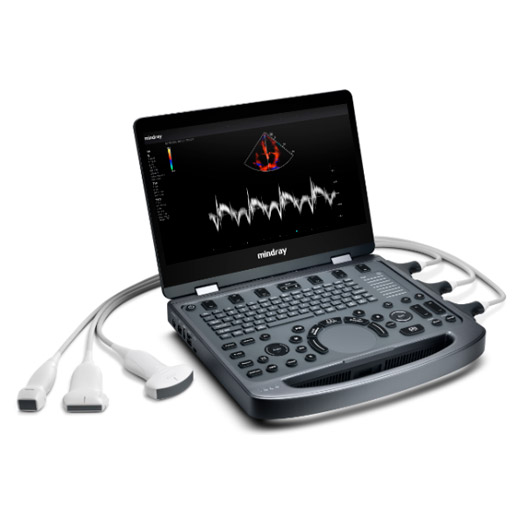

Mantenimiento preventivo, reparación y soporte técnico de equipamiento médico crítico en Misiones. Porque cada hora de inactividad tiene un costo que ninguna institución puede ignorar.

Es una sala de espera llena, un turno perdido, una urgencia sin respuesta. Las instituciones de salud no pueden operar con imprevistos. Nosotros tampoco lo aceptamos.
Trabajamos con instituciones que no pueden permitirse improvisaciones. Cada intervención es documentada, precisa y orientada a la continuidad operativa.
No somos un taller genérico. Somos ingeniería clínica especializada, con foco en el sector salud del NEA.
Un equipo sin mantenimiento es un riesgo para sus pacientes y para su institución. Hablemos y diseñamos juntos el plan de servicio que necesita.